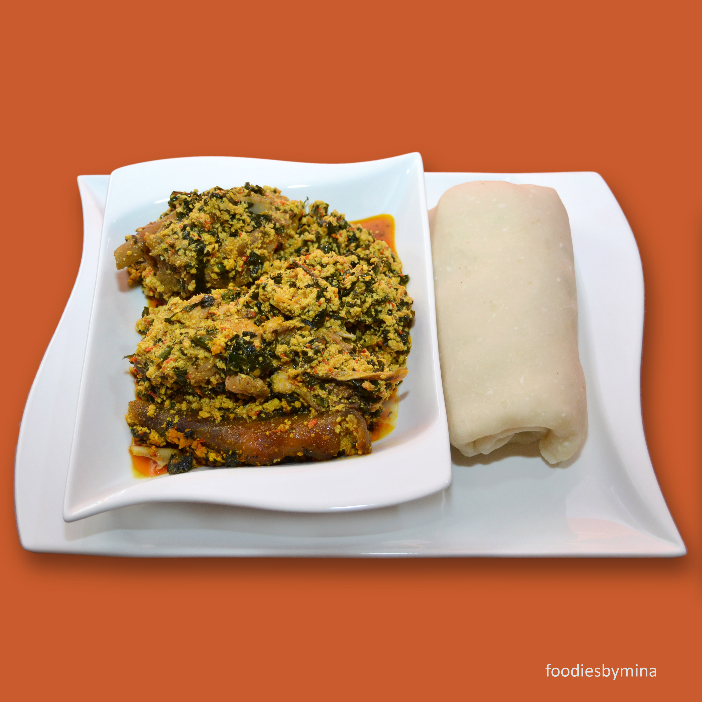

EGUSI AND FUFU
Egusi Soup is a rich and savory Nigerian soup made with ground melon seeds and eaten
with fufu dishes. Fufu is a West African dish made from starchy root vegetables such
as cassava, yams, or plantains. It is typically boiled and pounded into a thick paste-like
consistency before being served. Fufu is eaten with a variety of sauces and soups,
and is often considered to be a staple in many West African households

INGREDIENTS FOR EGUSI AND FUFU
For chicken and marinade:
- 2 cups of dry grounded melon (egusi)
- Meat
- Vegetables (Pumpkin and spinach leaves)
- pepper
- Palm Oil
- Smoked catfish
- Stock fish
- Spices
- Meat Stock or water
- Crayfish
HOW TO PREPARE EGUSI AND FUFU
- First prepare your meat; wash thoroughly, add some pepper, salt and boil till meat is tender
- Prepare the dried smoked catfish and stock fish; Soak the both in hot water for about 10 minutes
and break it into small pieces. Remove as many pieces of bones as you can and rinse thoroughly
under running water.
- Chop your Vegetables and set aside.
- Heat up some palm oil and fry the grounded melon (egusi) for a few minutes.
- Add your crayfish and spices.
- Add your meat stock or water and allow it for a few minutes to boil
- Add the pre-soaked stock fish, smoked catfish and your meat.
- Allow it cook thoroughly for five (5) minutes.
- Add the shredded pumpkin leaves, spinach leaves or which ever leaves used
- Taste for seasoning and allow it simmer for three (3) to five (5) minutes.
- Then serve with any fufu of choice either